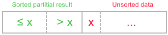
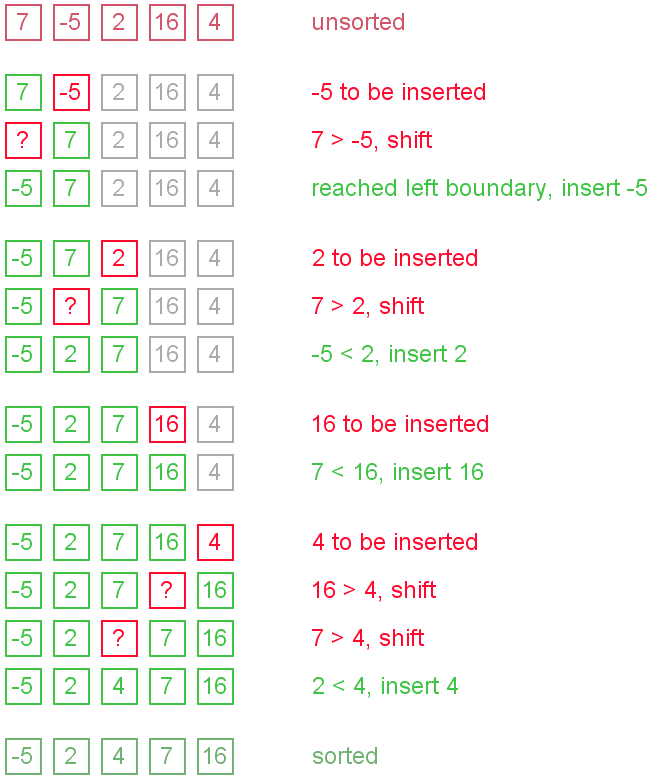
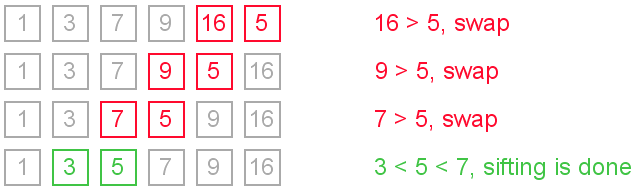
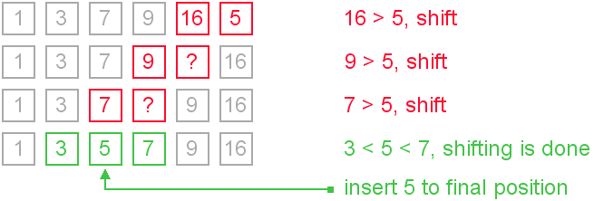

Insertion sort belongs to the O(n2) sorting algorithms. Unlike many sorting algorithms with quadratic complexity, it is actually applied in practice for sorting small arrays of data. For instance, it is used to improve quicksort routine. Some sources notice, that people use same algorithm ordering items, for example, hand of cards.
Insertion sort algorithm somewhat resembles selection sort. Array is imaginary divided into two parts - sorted one and unsorted one. At the beginning, sorted part contains first element of the array and unsorted one contains the rest. At every step, algorithm takes first element in the unsorted part and inserts it to the right place of the sorted one. When unsorted part becomes empty, algorithm stops. Sketchy, insertion sort algorithm step looks like this:

becomes
The idea of the sketch was originaly posted here.
Let us see an example of insertion sort routine to make the idea of algorithm clearer.
Example. Sort {7, -5, 2, 16, 4} using insertion sort.

The main operation of the algorithm is insertion. The task is to insert a value into the sorted part of the array. Let us see the variants of how we can do it.
"Sifting down" using swaps
The simplest way to insert next element into the sorted part is to sift it down, until it occupies correct position. Initially the element stays right after the sorted part. At each step algorithm compares the element with one before it and, if they stay in reversed order, swap them. Let us see an illustration.

This approach writes sifted element to temporary position many times. Next implementation eliminates those unnecessary writes.
We can modify previous algorithm, so it will write sifted element only to the final correct position. Let us see an illustration.

It is the most commonly used modification of the insertion sort.
It is reasonable to use binary search algorithm to find a proper place for insertion. This variant of the insertion sort is called binary insertion sort. After position for insertion is found, algorithm shifts the part of the array and inserts the element. This version has lower number of comparisons, but overall average complexity remains O(n2). From a practical point of view this improvement is not very important, because insertion sort is used on quite small data sets.
Insertion sort's overall complexity is O(n2) on average, regardless of the method of insertion. On the almost sorted arrays insertion sort shows better performance, up to O(n) in case of applying insertion sort to a sorted array. Number of writes is O(n2) on average, but number of comparisons may vary depending on the insertion algorithm. It is O(n2) when shifting or swapping methods are used and O(n log n) for binary insertion sort.
From the point of view of practical application, an average complexity of the insertion sort is not so important. As it was mentioned above, insertion sort is applied to quite small data sets (from 8 to 12 elements). Therefore, first of all, a "practical performance" should be considered. In practice insertion sort outperforms most of the quadratic sorting algorithms, like selection sort or bubble sort.
We show the idea of insertion with shifts in Java implementation and the idea of insertion using swaps in the C++ code snippet.
void insertionSort(int[] arr) {
int i, j, newValue;
for (i = 1; i < arr.length; i++) {
newValue = arr[i];
j = i;
while (j > 0 && arr[j - 1] > newValue) {
arr[j] = arr[j - 1];
j--;
}
arr[j] = newValue;
}
}
void insertionSort(int arr[], int length) {
int i, j, tmp;
for (i = 1; i < length; i++) {
j = i;
while (j > 0 && arr[j - 1] > arr[j]) {
tmp = arr[j];
arr[j] = arr[j - 1];
arr[j - 1] = tmp;
j--;
}
}
}